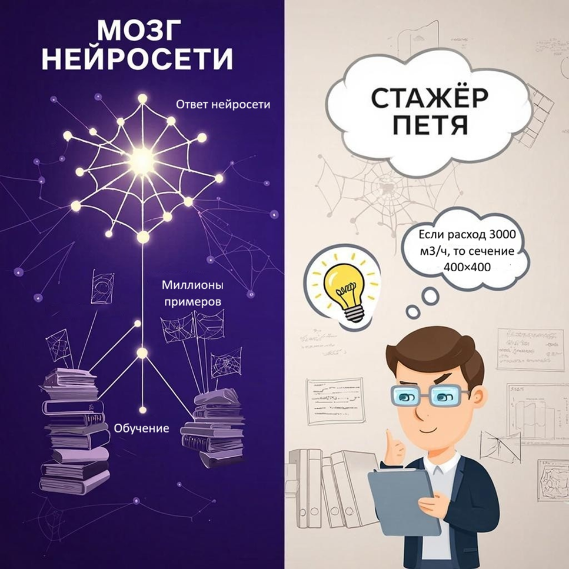

Кто такой этот ваш ИИ и как он думает
Здравствуйте, Андрей! Рада видеть вас на этом курсе. Давайте сразу договоримся: здесь не будет заумных лекций про «глубокое обучение» и «трансформеры». Мы с вами инженеры, нам важна практика. Но прежде чем погрузиться в инструменты, нужно понять одну простую вещь: с кем или чем мы вообще имеем дело? Что это за «нейросеть», которой мы собираемся доверить часть своей работы? Если поймем, как она «думает», перестанем удивляться ее ошибкам и научимся выжимать из нее максимум пользы.

Чем вам поможет этот курс
Вы и так знаете, что пояснительные записки, поиск информации в нормативах, проверка спецификаций отнимают до 80% вашего времени. Остается 20% на реальное проектирование.
С помощью нейросети можно за две минуты получить черновик спецификации, который раньше вы делали час. Но важно помнить: нейросеть не решит все за вас, а возьмет на себя рутину – поиск и сравнение аналогов оборудования. Если понимать, как она «думает», вы перестанете удивляться ее ошибкам и начнете получать пользу за минуты.
Этот курс – выжимка моего опыта. Мы не будем учиться рисовать картинки для соцсетей. Мы будем решать конкретные задачи. А именно:
- как за 10 минут набросать черновик пояснительной записки к разделам инженерных систем.
- за минуту найти в СП 60.13330 все требования к венткамерам.
- автоматически проверить ведомость объемов работ на дубли и ошибки.
- сделать презентацию для заказчика без дизайнера.
Но для начала давайте разберемся, с кем или чем мы говорим.
Кто такой этот ваш ИИ и как он думает
Представьте, что к вам в отдел привели стажера – Петю. Петя вчера защитил диплом, энтузиазма вагон, но опыта – ноль. Вы ему говорите: «Петя, нужно подобрать воздушный клапан на расход 3000 кубов». Петя лезет в интернет, читает форумы, смотрит каталоги, советуется с коллегами. В итоге выдаёт вам пять вариантов, из которых два – полная чушь, но три – вполне рабочие. Вы проверяете, говорите: «Петя, молодец, но клапан должен быть огнезадерживающим, а ты подобрал обычный». Петя запоминает и в следующий раз уже не делает таких ошибок.

Так вот нейросеть похожа на Петю. Только училась она не на паре курсов, а на миллионах проектов, нормативных документов, каталогов и форумов. В ее голове нет формул, зато есть статистика: «Если расход 3000, то в 80% случаев сечение клапана 400х400». Она не знает физику процесса, но отлично уловила закономерность.
Соответственно, нейросеть быстро дает черновик ответа, но может ошибаться.
Посмотрите пример из практики для составления спецификаций.
Пример
Вы просите нейросеть: «Составь спецификацию на вентиляцию для офиса 100 м²».
- Инженер: считает воздухообмен по нормативам.
- ИИ: вспоминает, что в 90% офисов использовали решетки 200х200 и приточную установку производительностью 1000-1200 м³/ч.
Как итог: нейросеть выдает правдоподобный, но усредненный ответ, в котором не учитываются нюансы, например, наличие кухни в офисе.
Итак, три главных отличия ИИ от человека:
- ИИ не считает, а вспоминает.
Все цифры и расчеты от нейросети проверяй руками или в специализированном софте. - ИИ обучается на примерах, а не на формулах.
Давайте нейросети в запросе хорошие примеры (образцы текста, таблицы, ссылки на нормативку), чтобы она «поняла», что вы хотите. - ИИ не знает, чего он не знает.
Всегда задавайте уточняющие вопросы: «На каких данных основан твой ответ?», «Есть ли исключения?», «Что будет, если изменить условие?»
Нейросеть – это не твоя замена. Это твой личный ассистент, который:
- не устает,
- не просит кофе,
- не обижается на правки,
- работает 24/7.
Давайте проверим, все ли вы запомнили. Ответьте на пару вопросов, выбрав один вариант ответа.